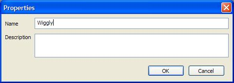
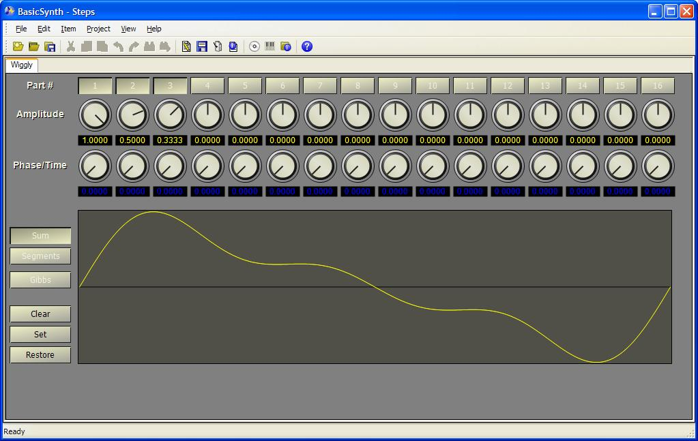

Most sound generators in Basic Synth use pre-calculated tables to define the waveform for the sound. Ten wavetables for common waveforms are created automatically, but you will probably want to define wavetables specific to the sounds you create. To add a wavetable, right-click on the Synthesizer project item and select Add Wavetable from the pop-up menu. The wavetable properties box is opened.
Enter the name "Wiggly" for the waveform and then press OK. The waveform editor will open.
(Because this editor is very wide, you may need to hide the project tree and keyboard panes to see the entire waveform at once. Select the View menu to hide or show panes.)
Up to sixteen partials may be combined to produce the waveform. The buttons at the top enable each partial. Select partials 1, 2 and 3 and then use the knobs to set the amplitude for each partial. Set partial 1 to 1.0, partial 2 to 0.5 and partial 3 to 0.333. To change a value with a knob, click the mouse on the knob and move the mouse in a circular motion while holding down the mouse button. Moving clockwise increases the value; moving counter-clockwise decreases the value. The label under the knob shows the current value. Hold down the Ctrl key while moving the mouse to slow down the speed of the knob. Hold down the Shift key to accelerate the knob. You can also click on the label and enter the value directly with the pop-up form.
Press the Set button when you have finished setting the partials. Until you press Set the values are only stored in the project item. Set causes the wavetable to be transfered into the synthesizer for use and also saves a copy of the current setting. (Most editors in BasicSynth make immediate updates to the synthesizer as you change values in the editor, and you will not have to save the settings to make them active. Because the wavetable is calculated based on all partials, recalculation of the waveform is delayed until you have finished entering the values.) The Restore button changes the settings back to the last point where you pressed Set. The Clear button clears all values on the form.
Note: Enabling more partials than you need does not affect performance of the synthesizer. The wavetable is calculated once when the project is loaded and whenever you edit the wavetable. Instruments using the waveform table do not need to recalculate the waveform repeatedly. However, only enabled partials are stored in the project file.
Close the editor when finished. To close an editor, select File->Close from the main menu, or press Ctrl-F4. Optionally, you can right-click the associated project item and then select Close from the pop-up menu. You can also right-click the tab above the editor and select Close.
Next: Configure the mixer...